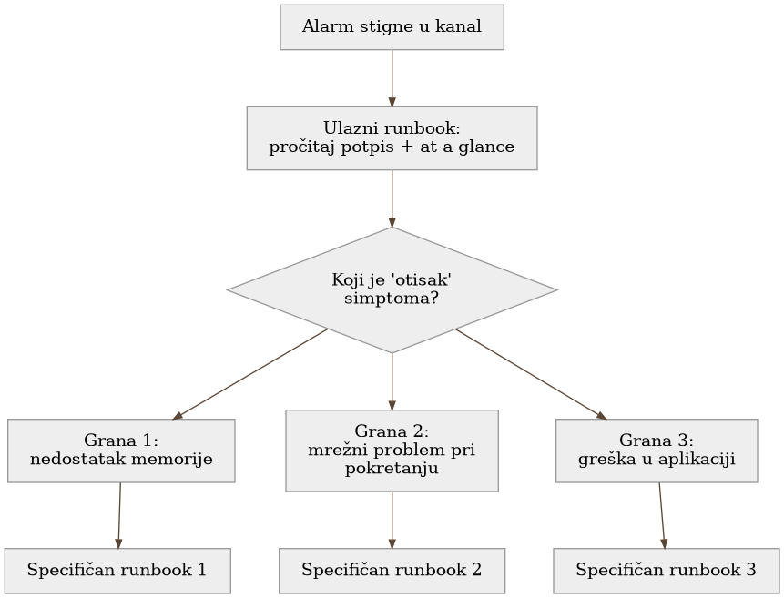

Poglavlje 16 — Runbook-ovi: od alarma do rešenja
Vatrogasac koji stigne na mesto požara ne otvara priručnik i čita od prve stranice. Na kacigi ili u vozilu drži laminiranu karticu, podeljenu po tipu požara — masna vatra u kuhinji se gasi drugačije od požara na električnoj instalaciji, a ta razlika mora biti prepoznata za par sekundi, ne posle minuta čitanja. Kartica ne objašnjava zašto voda ne sme na uljani požar — to se uči na obuci, unapred. Kartica postoji da potvrdi, brzo, da je vatrogasac na pravom mestu, sa pravim planom, pre nego što uopšte podigne crevo.
16.1 Pitanje na koje ovo poglavlje odgovara
Alarm koji stigne u tri ujutru nosi ozbiljnost i osnovni kontekst, ali retko nosi ceo put do rešenja. Ovo poglavlje odgovara na pitanje kako izgleda dokument koji skraćuje put od "alarm je stigao" do "problem je rešen ili bar suzbijen" — i, podjednako važno, kako se takav dokument razlikuje od druga dva tipa dokumentacije sa kojima se lako pobrka.
16.2 Kako je to urađeno — praktičan pregled
Anatomija dobrog runbook-a
Runbook u implementaciji koju knjiga prati uvek počinje sa dva elementa, u tačno tom redosledu:
- Potpis "kada stigneš ovde" — precizan opis simptoma ili alarma koji čitaoca dovodi na ovu stranicu, tako da prva rečenica potvrdi ili ospori da je čitalac na pravom mestu, pre nego što pročita bilo šta dalje.
- "At a glance" okvir — sažetak koji dežurnom inženjeru omogućava da za desetak sekundi potvrdi orijentaciju: koji signal je ovo, koji domen pogađa, koliko je ozbiljno, i koja je prva radnja.
Tek posle toga sledi grananje po "otisku" simptoma — konkretno drvo odluka koje razlikuje slične, ali suštinski različite uzroke istog alarma. Isti alarm ("zadatak nije uspeo") može imati sasvim različite runbook-e u zavisnosti od toga da li je uzrok nedostatak memorije, mrežni problem pri pokretanju, ili greška u samoj aplikaciji — grananje postoji upravo da bi dežurni inženjer brzo prepoznao koji od tih runbook-a čita, ne da čita sve redom.
Runbook-ovi su organizovani po domenu sistema — baze podataka, mrežni sloj, serverska flota, auth sloj, batch/ETL flota — svaki sa svojim indeksom. Konvencija imenovanja datoteke sama nosi informaciju (domen, zatim simptom), tako da je moguće naći pravi dokument i pre nego što se otvori, samo iz naslova u indeksu.
Tri različita dokumenta, tri različita smera vremena
Vredi eksplicitno razdvojiti tri tipa dokumenta koji lako izgledaju slično, a rade sasvim različit posao:
- Runbook je unapred usmeren. "Kad X sledeći put zaokine, uradi Y." Piše se pre nego što se sledeći incident dogodi, za onoga ko će ga tek pročitati u trenutku pritiska.
- Postmortem je unazad usmeren. "Šta se jednom pokvarilo, zašto, i šta smo promenili da se ne ponovi." Piše se posle incidenta, i njegov fokus je razumevanje i sistemska popravka, ne trenutno gašenje požara.
- Handoff je jednokratna primopredaja. Konkretan bag ili nalaz koji tim koji ga je istražio ne može sam da reši, upućen tačno jednom vlasniku, sa jasnim zahtevom i dokazima. Nije reusable procedura kao runbook, niti retrospektiva kao postmortem — to je ask upućen nekome drugom.
Ova trostruka podela nije administrativna sitnica — svaki od tri dokumenta odgovara na drugo pitanje ("šta da radim sada" naspram "zašto se to dogodilo" naspram "ko treba ovo da reši"), i mešanje sadržaja jednog u drugi otežava upravo onu brzinu koju runbook prvenstveno postoji da omogući. Dobar runbook često nastaje iz postmortema — incident otkrije obrazac otkaza koji vredi imati unapred pripremljenu proceduru za, i ta procedura postaje runbook — ali sam runbook posle toga stoji nezavisno, bez potrebe da čitalac prvo pročita postmortem koji ga je inspirisao.

16.3 Analitički deo — zašto struktura runbook-a nije stilski izbor
Zvanična preporuka: orijentacija pre instrukcije
Nezavisan pregled prakse pisanja runbook-a dosledno navodi da dobar runbook otvara jasnim opisom simptoma i uslova koji ga aktiviraju, pre nego što pređe na konkretne korake — ista dvodelna struktura (potpis + at-a-glance) primenjena ovde. Isti materijal eksplicitno razdvaja runbook od playbook-a (playbook je stratešiji, opisuje širi pristup; runbook je taktički, korak po korak) i od postmortema (koji je retrospektivan, ne akcion u trenutku incidenta) — potvrđujući da razdvajanje po smeru vremena, primenjeno ovde kroz tri odvojena tipa dokumenta, nije proizvoljna organizaciona odluka nego prepoznat obrazac.
Gde implementacija dodaje nešto specifično: eksplicitan treći tip
Većina spoljašnjeg materijala razlikuje samo dva tipa dokumenta (runbook naspram postmortem). Implementacija koju knjiga prati je dodala treći, eksplicitno imenovan tip — handoff — jer je u praksi primetila da postoji kategorija rada koja ne pripada ni jednom od druga dva: nalaz koji je istražen, ali čije rešenje zahteva vlasništvo (kod, pristup, odluku) koje istraživački tim nema. Trpanje takvog nalaza u postmortem bi ga učinilo retrospektivom nečega što se još nije desilo; trpanje u runbook bi pretpostavilo da postoji ponovljiva procedura, dok zapravo postoji jedan konkretan, neponovljen bag koji čeka jednog vlasnika. Imenovanje trećeg tipa je omogućilo da svaki dokument ostane fokusiran na posao za koji je napravljen.
Cena mešanja tipova: kontrafaktički scenario
Vredi zamisliti šta bi se dogodilo da su sva tri tipa spojena u jedan dokument po domenu — "sve o bazi podataka na jednom mestu". Dežurni inženjer u tri ujutru, sa alarmom koji zahteva brzu odluku, morao bi da skroluje kroz istorijski kontekst prošlih incidenata i otvorene zahteve ka drugim timovima da bi stigao do koraka koji mu trebaju sada. Runbook postoji upravo da tu vrstu tereta ukloni sa trenutka pritiska — "at a glance" okvir i grananje po otisku simptoma su besmisleni ako ih čitalac prvo mora da pronađe unutar dokumenta koji pokušava da bude i istorija i uputstvo i tiket odjednom.
Vratimo se na vatrogasca s početka poglavlja. Laminirana kartica na kacigi ne sadrži izveštaj o prošlom požaru niti listu opreme koju treba naručiti od dobavljača — sadrži tačno ono što treba da se odluči u prvih deset sekundi. Izveštaj o prošlom požaru i porudžbina opreme su podjednako važni dokumenti, ali žive negde drugde, dostupni kad za njih dođe vreme, ne u trenutku kad crevo treba da bude podignuto. Runbook nije mesto za sve što se zna o jednom domenu — to je mesto za ono što treba da se zna u prvih deset sekundi, i ništa više.
16.4 Skupljena pravila iz ovog poglavlja
- Otvori svaki runbook potpisom "kada stigneš ovde" i "at a glance" okvirom — dežurni inženjer mora moći da potvrdi orijentaciju za desetak sekundi.
- Granaj po otisku simptoma, ne po redosledu pisanja — isti alarm sa različitim uzrocima zaslužuje različite grane, ne jedan dugačak linearan tekst koji čitalac mora sam da filtrira.
- Drži tri tipa dokumenta strogo odvojena po smeru vremena: runbook unapred, postmortem unazad, handoff kao jednokratan zahtev upućen jednom vlasniku.
- Dozvoli runbook-u da nastane iz postmortema, ali neka posle toga stoji nezavisno — čitalac u trenutku pritiska ne sme morati prvo da pročita istoriju da bi stigao do koraka koji su mu potrebni.
- Organizuj runbook-ove po domenu sa konvencijom imenovanja koja nosi informaciju samu po sebi (domen + simptom), tako da se pravi dokument nađe iz indeksa, pre nego što se uopšte otvori.
16.5 Vežba za čitaoca
Uzmi bilo koji dokument u svom sistemu koji zoveš "runbook" i proveri prvih deset redova: da li potvrđuju, za deset sekundi čitanja, da je čitalac na pravom mestu i šta treba da uradi prvo? Ako prvih deset redova umesto toga sadrže istorijski kontekst, objašnjenje arhitekture ili otvoren zahtev ka drugom timu — to nije runbook, to je nešto drugo nazvano runbook-om, i vredi ga razdvojiti pre nego što neko pokuša da ga koristi u tri ujutru.